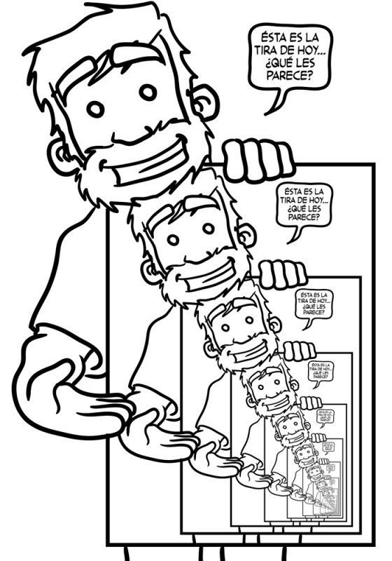

<!DOCTYPE html>
<html lang="en">
  <head>
    <meta charset="utf-8" />
    <meta name="viewport" content="width=device-width, initial-scale=1.0, maximum-scale=1.0, user-scalable=no" />

    <title>Recursividad</title>
    <link rel="stylesheet" href="./dist/reveal.css" />
    <link rel="stylesheet" href="./dist/theme/league.css" id="theme" />
    <link rel="stylesheet" href="./css/highlight/zenburn.css" />
    <link rel="stylesheet" href="./_assets/slides/css/filminas.css" />

  </head>
  <body>
    <div class="reveal">
      <div class="slides"><section  data-markdown><script type="text/template">

# Recursividad

<small>Created by
    <a href="https://t.me/rmarku" target="_blank">
        <i class="fab fa-telegram-plane"></i>rmarku
    </a>
</small>

</script></section><section  data-markdown><script type="text/template">
## ¿Qué es la recursividad?
<a target="_blank" href="http://www.google.com/search?q=recursividad">Google -> Recursividad</a>

</script></section><section  data-markdown><script type="text/template">
## ¿Qué es la recursividad?


</script></section><section  data-markdown><script type="text/template">
## Recursividad

Es la forma de especificar un proceso basado en su propia definición.

Un algoritmo recursivo es un algoritmo que expresa la solución de un 
problema en terminos de una llamada a si mismo. La llamada a si mismo 
se conoce como llamada recursiva


</script></section><section  data-markdown><script type="text/template">
## La recursividad es esto:
```cpp
    int funcion(){
        funcion();
    }
```
Una función que se llama a si misma.

</script></section><section  data-markdown><script type="text/template">
## ¿Por que una función se llamaría a si misma?

Porque es recursiva, 🤣

* **Recursividad**:

  Cualidad de recursivo.
    
* **Recursivo**:

  Que puede repetirse o aplicarse indefinidamente.
    
</script></section><section  data-markdown><script type="text/template">
### Ejemplo
## Factorial

# n!

Plantiemos una solución.

</script></section><section  data-markdown><script type="text/template">
### Ejemplo: Factorial

## 5! = 5 * 4 * 3 * 2 * 1 
## 5! = 5 *(4 * 3 * 2 * 1)
## 4! = 4 * 3 * 2 * 1
## 5! = 5 * 4!

</script></section><section  data-markdown><script type="text/template">
## Ejemplo: Factorial
# N! = N * (N-1)!

</script></section><section  data-markdown><script type="text/template">
## Ejemplo: Factorial
#### ¿Facil no?<br>
Hay solo un problema

## 2! = 2 * 1!
## 1! = 1 * 0!
## 0! = 0 * -1!
¿Cuando paro?

</script></section><section  data-markdown><script type="text/template">
## Ejemplo: Factorial
## Fijo lo siguiente
## 0! = 1

</script></section><section  data-markdown><script type="text/template">
## Ejemplo: Factorial

## 5! = 5 * 3! = 120
## 4! = 4 * 3! = 24
## 3! = 3 * 2! = 6
## 2! = 2 * 1! = 2
## 1! = 1 

</script></section><section  data-markdown><script type="text/template">
## Recursividad

* Es un concepto utilizado en matemática y computación
* Se utiliza para dar soluciones elegantes a problemas complejos
* Es una alternativa a los bucles de repetición

</script></section><section  data-markdown><script type="text/template">
## Función recursiva

* La función recursiva sabe como resolver el o los casos más simples y un caso base.
* Si se llama a la función con el caso base, esta simplemente devuelve un resultado
* Si se llama sin el caso base, la función divide el problema en:
    * Una parte que sabe resolver
    * Una parte que no sabe resolver, pero es similar al problema inicial.
    
</script></section><section  data-markdown><script type="text/template">
## Función recursiva
* Como este problema se parece al problema original, la función llama a una copia de si misma
para que resuelva el problema. (llamada recursiva)

</script></section><section  data-markdown><script type="text/template">
## Funciones recursivas

Las funciones recursivas tienen dos partes:

* El caso **Recursivo**, que soluciona parte del problema y hace la llamada recursiva.
* El caso **Base**, el que no hace llamada recursiva.

Una función recursiva puede tener uno o más casos bases y una o más llamadas recursivas.

</script></section><section  data-markdown><script type="text/template">
## Funciones recursivas
### Cuidados al usar recursividad

* La recursión es poco intuitiva
* No hacer cosas recursivas si se puede hacer iterativa
* Algunas veces, la solución recursiva es la solución más elegante y entendible.

</script></section><section  data-markdown><script type="text/template">
## Funciones recursivas
### Depurar recursividades

* La recursion es difícil de depurar
* Si el caso base esta mal definido, probablemente produzca un Stack Overflow
* Comúnmente, la función recursiva no funciona o funciona completamente.

</script></section><section  data-markdown><script type="text/template">
## Funciones recursivas
### Como realizarlas

* No comenzar directamente con el código, garabatear y ver si uno entiende el proceso
* Comenzar con el caso Recursivo
* Agregar el caso Base.
* Comúnmente, si estas "Hardcodeando" muchos casos bases, la estás complicando

</script></section><section  data-markdown><script type="text/template">
## Funciones recursivas
### Como pensar el caso Recursivo

* Piensa en como dividirlo en un subproblema y hacerlo más pequeño
* Piensa como achicar el problema y hacerlo más simple (N-1?, N/2?, ...)
* Piensa en la recursividad como hacer trampa

</script></section><section  data-markdown><script type="text/template">
## Funciones recursivas
### Como pensar el caso Base

* Piensa en cual sería el problema más simple
* Piensa cual sería la solución directa de este subproblema
* Asegurate que la recursion converge al caso base

</script></section><section  data-markdown><script type="text/template">
### Ejemplo Potencia

## 2<sup>4</sup> =2 * 2 * 2 * 2 
## 2<sup>4</sup> = 2 * ( 2 * 2 * 2 ) 
## 2<sup>4</sup> = 2 x 2<sup>3</sup>

</script></section><section  data-markdown><script type="text/template">
### Ejemplo Potencia

```cpp
#include &lt;iostream&gt;

unsigned long long potencia(unsigned int base, unsigned int exp){
    if(exp == 0){
        return 1;
    }
    return base * potencia( base, exp - 1 );
}

int main(){
    cout << "2 a la 0:  " << potencia(2,0)  << endl;
    cout << "2 a la 4:  " << potencia(2,4)  << endl;
    cout << "2 a la 8:  " << potencia(2,8)  << endl;
    cout << "2 a la 16: " << potencia(2,16) << endl;
    cout << "2 a la 32: " << potencia(2,32) << endl;
    return 0;
}
```

</script></section><section  data-markdown><script type="text/template">
### Ejemplo Fibonacci

`\[
f(n) =
\Bigg\{ \begin{matrix}
0 & n = 0 \\
1 & n = 1 \\
f(n-1)+f(n-2) & n > 0 \\
\end{matrix}
\]`


</script></section><section  data-markdown><script type="text/template">
### Ejemplo Fibonacci

```cpp
#include &lt;iostream&gt;

unsigned long fibonacci(unsigned n){
    if( n == 0 || n == 1)
        return n;

    return fibonacci(n-1) + fibonacci(n-2);
}

int main(){
    cout << "fib: 3  " << fibonacci(3)  << endl;
    cout << "fib: 5  " << fibonacci(5)  << endl;
    cout << "fib: 10  " << fibonacci(10) << endl;
    cout << "fib: 15  " << fibonacci(15) << endl;
    return 0;
}
```
    
</script></section><section  data-markdown><script type="text/template">

## Backtracking o Vuelta atrás

Es una metodología para encontrar soluciones que nos permite
probar diferentes caminos y volver si no es el correcto.
 
</script></section><section  data-markdown><script type="text/template">

## Backtracking o Vuelta atrás

</script></section><section  data-markdown><script type="text/template">

# Ejemplo Laberinto ...
</script></section></div>
    </div>

    <script src="./dist/reveal.js"></script>

    <script src="./plugin/markdown/markdown.js"></script>
    <script src="./plugin/highlight/highlight.js"></script>
    <script src="./plugin/zoom/zoom.js"></script>
    <script src="./plugin/notes/notes.js"></script>
    <script src="./plugin/math/math.js"></script>
    <script>
      function extend() {
        var target = {};
        for (var i = 0; i < arguments.length; i++) {
          var source = arguments[i];
          for (var key in source) {
            if (source.hasOwnProperty(key)) {
              target[key] = source[key];
            }
          }
        }
        return target;
      }

      // default options to init reveal.js
      var defaultOptions = {
        controls: true,
        progress: true,
        history: true,
        center: true,
        transition: 'default', // none/fade/slide/convex/concave/zoom
        plugins: [
          RevealMarkdown,
          RevealHighlight,
          RevealZoom,
          RevealNotes,
          RevealMath
        ]
      };

      // options from URL query string
      var queryOptions = Reveal().getQueryHash() || {};

      var options = extend(defaultOptions, {"controls":true,"progress":true,"slideNumber":true}, queryOptions);
    </script>

    <script src="./_assets/slides/js/pruebas.js"></script>
    <script src="./_assets/slides/js/init.js"></script>

    <script>
      Reveal.initialize(options);
    </script>
  </body>
</html>
